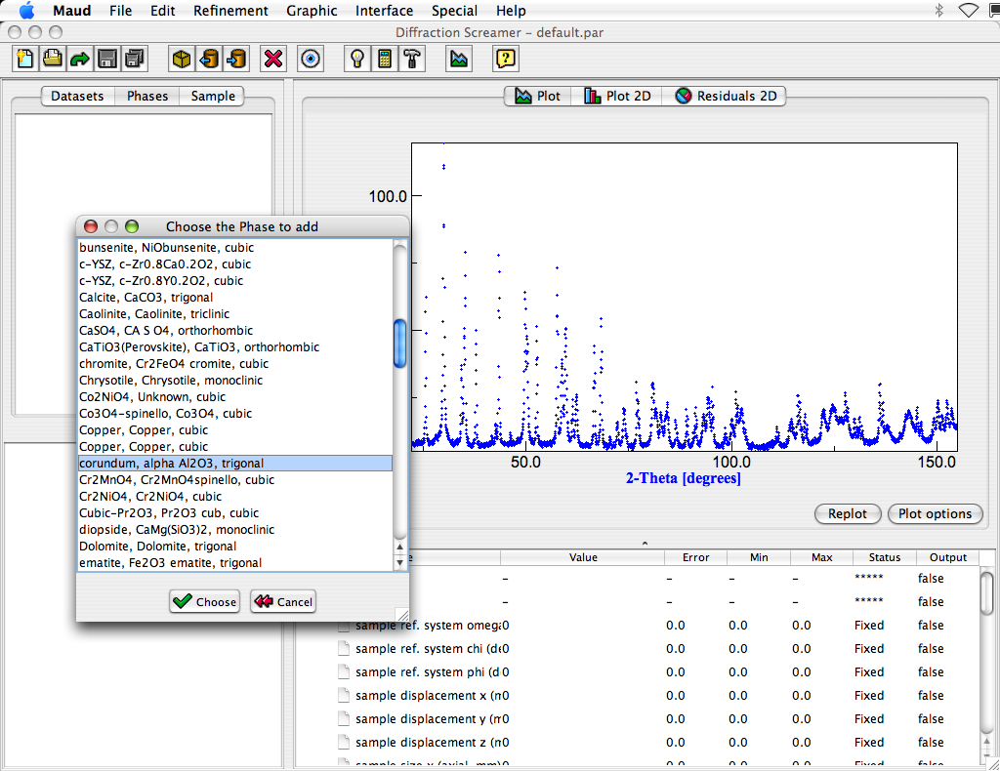
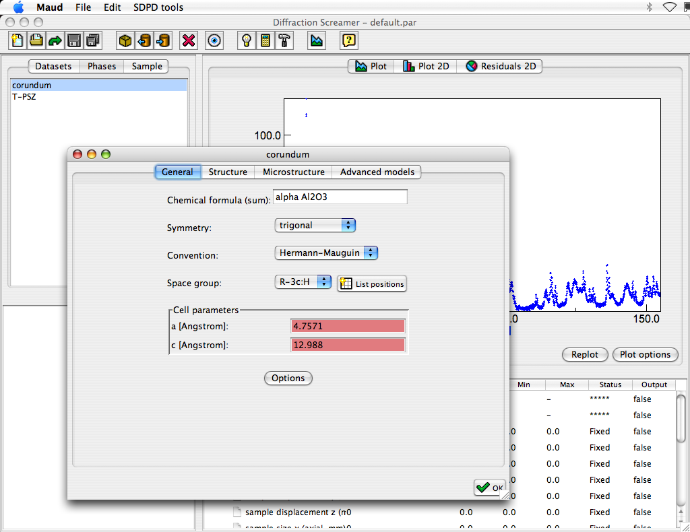

Building the analysis file (step 2: load and modify the phases)
- Select the Phases tabPanel in the main Maud window.
- There should be no phases in the list. If any, select it and press the remove button in the toolbar (the one with
a red cross).
- Press the Load an object from a (CIF) database or file... button to add a new phase (each button on the
toolbar acts on the selected list and or object/s). Select the database file structures.mdb from the
databases and examples folder. A window will appear where you can choose the
corundum (Al2O3) phase first from the visible listbox.

Repeat the procedure to add the phase
T-PSZ from the same database. It is a the tetragonal zirconia Ce stabilized.
- Tip: you may load both phases from the database at once by selecting both. Discontinuous selection
is permitted.
On MacOSX you can add more selections by holding down the Apple button and selecting whatever you need
with the mouse click. On Windows and Lunix there is the same counterpart with their specific button-mouse
click procedure.
- If you wish to check the phase characteristics for the corundum or T-PSZ you may select the specific phase
and then click on the edit button on the toolbar (the eye icon button).
A new window will appear with the phase crystallographic and microstructural characteristic and models.
You don't need to do anything at the moment. At end close those windows with the OK button.
